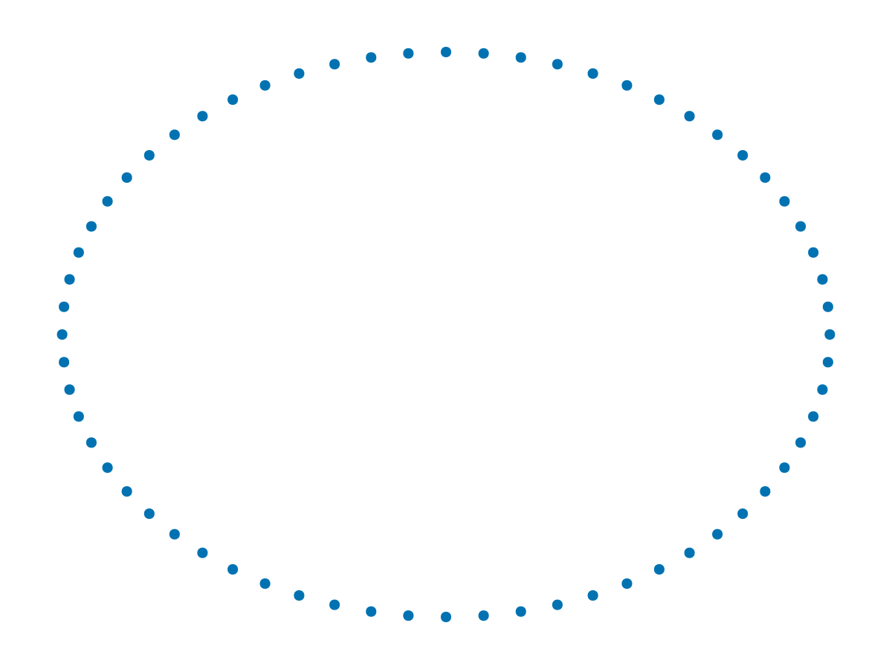
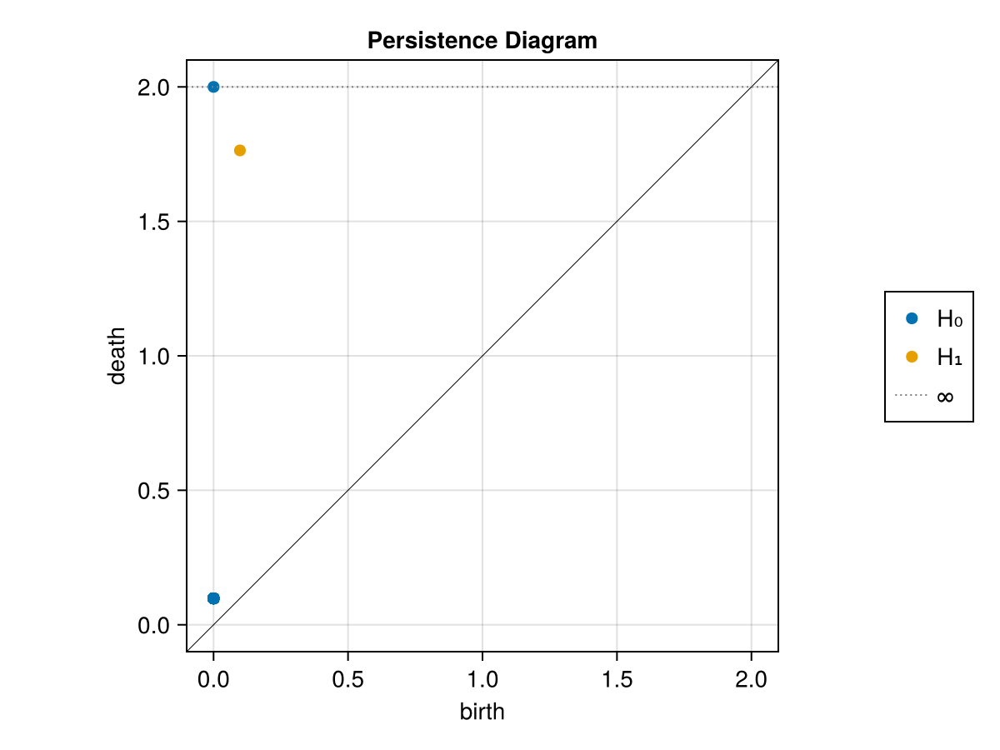
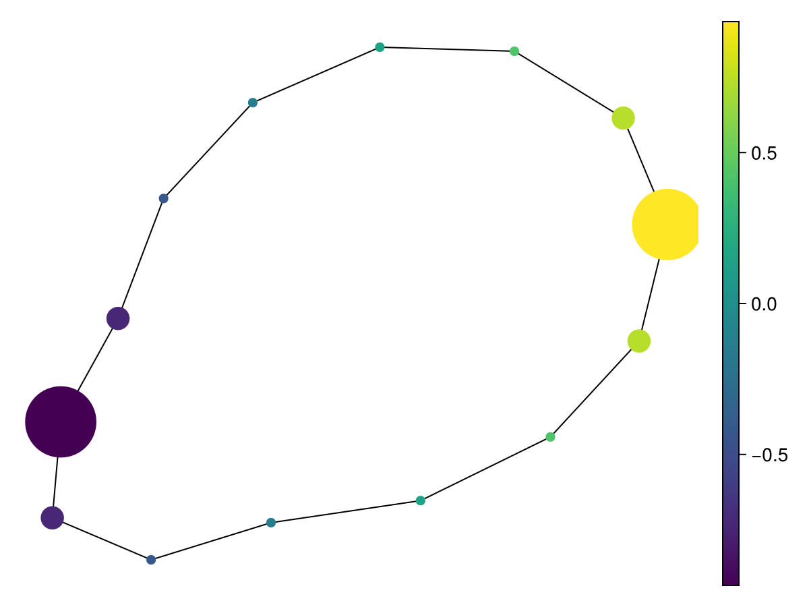

Your first shape analysis
This tutorial follows one dataset through three questions: does it contain a loop, how can we summarize its geometry, and which original observations does each summary node represent? No topology background is needed. The examples execute during the documentation build.
Install the current development stack
Registration is deferred. Use Julia 1.10 or later and a checkout of JuliaTDA.jl. From that checkout, prepare a separate analysis environment:
julia scripts/setup.jl shape-analysis
julia --project=shape-analysis -e 'using Pkg; Pkg.add("CairoMakie")'
julia --project=shape-analysisThe setup resolves public sibling repositories and the bundled multiparameter package together. It does not require local sibling checkouts. Developers with the ecosystem checked out side by side can select them explicitly with julia scripts/setup.jl --local shape-analysis.
Keep the analysis Project.toml, Manifest.toml, data provenance and random seed when sharing results. The umbrella and bundled package remain connected to this checkout; moving it requires running setup again.
For documentation development, run:
julia docs/setup.jl
julia --project=docs docs/make.jlUse julia docs/setup.jl --local to include local sibling changes. Documentation builds deploy only when JULIATDA_DOCS_DEPLOY=true is explicitly set.
Make a small circle
using JuliaTDA
using JuliaTDA.ImageCovers, JuliaTDA.IntervalCovers, JuliaTDA.Refiners
using CairoMakie
using Statistics: mean
angles = range(0, 2π; length = 65)[1:64]
X = EuclideanSpace([[cos(t), sin(t)] for t in angles])
(points = length(X), coordinate_matrix_size = size(as_matrix(X)))(points = 64, coordinate_matrix_size = (2, 64))A point cloud is a vector of points. In the matrix representation, columns are points, so the result above is 2 × 64. A table has the opposite visual convention: one observation per row. Use euclidean_space(table; cols=...) to convert a table explicitly. Synthetic generators live in JuliaTDA.MetricSpaces.Datasets, for example JuliaTDA.MetricSpaces.Datasets.torus(100).
metricspace_plot(X)
Track connectivity across distance scales
Imagine expanding the distance at which points count as neighbors. Components join, a loop forms, and eventually triangles fill it. Persistent homology records each feature's birth and death along this scale axis.
diagrams = ripserer(X; dim_max = 1)
h1 = diagrams[2]
(components = length(diagrams[1]), loop_intervals = length(h1),
longest_loop = maximum(persistence, h1))(components = 64, loop_intervals = 1, longest_loop = 1.665707180041872)diagrams[d + 1] is homology dimension d: H₀ counts connected components, H₁ loops, and H₂ voids. The index offset matters. Zero-length features may be omitted, and a noisy cloud can have many short bars; the total number of bars is not automatically the number of meaningful loops.
persistence_plot(diagrams)
The diagonal is birth = death. A point far from it describes a feature that persists across a wider scale range. Its coordinates have distance units. A long bar is a useful geometric signal; scientific significance also depends on sampling, preprocessing and a suitable statistical model.
Compress the circle into a Mapper graph
Mapper answers a different question: what does the cloud look like when viewed through a chosen measurement? Use the x-coordinate as that measurement, cover its range with overlapping intervals, and cluster inside each interval.
filter_values = first.(X)
cover = R1Cover(filter_values, Uniform(length = 8, expansion = 0.35))
M = classical_mapper(X, cover, DBscan(radius = 0.2))
(nodes = length(M.C), memberships = sum(length, M.C), points = length(M.X))(nodes = 14, memberships = 82, points = 64)M.C[i] contains the indices of original points in node i. Nodes sharing a point are connected. Because cover intervals overlap, one point can belong to multiple nodes: the membership count can exceed the number of observations. The cover resolution and clustering radius here suit this particular unit circle; inspect several nearby settings on a new dataset.
node_means = [mean(filter_values[ids]) for ids in M.C]
mapper_plot(M; node_values = node_means)
The layout positions nodes for readability. Only the graph edges, memberships and supplied node measurements encode this construction; lengths drawn by a spring layout are not original Euclidean distances.
Return to the observations
table = (x = first.(X), y = last.(X))
summaries = node_statistics(M, table; stats = (mean,))
node_id = argmax(summaries.x_mean)
(node = node_id, original_rows = M.C[node_id], mean_x = summaries.x_mean[node_id])(node = 14, original_rows = [1, 2, 3, 4, 5, 6, 7, 59, 60, 61, 62, 63, 64], mean_x = 0.9338739618415111)This link back to rows is what makes Mapper useful for exploration. Preserve row order when joining metadata, and examine the original points before interpreting a branch or an apparent anomaly. node_statistics z-scores describe departures from the overall sample; they are not hypothesis tests.
With an interactive backend, the same link is available by clicking a node:
using GLMakie
GLMakie.activate!()
explorer = mapper_explorer(M; node_values = node_means, inspector = true)
display(explorer.figure)
explorer.selected_node[] = node_id
explorer.selected_node[] = nothing # clear the selectionUse CairoMakie for static exports and GLMakie or WGLMakie for interaction. Install the chosen backend in your active environment before loading it.
Continue with Choosing a workflow or Reading topological results. The Mapper exploration tutorial adds a branch and investigates its metadata.